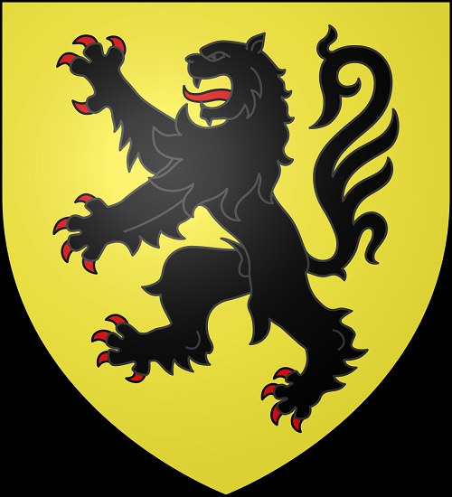

Grevinna. Blev högst 71 år.
937 Saxony, Tyskland. [1]
1008-05-25. [1]
Matilda av Sachsen, grevinna av Flandern
Från Wikipedia, den fria encyklopedin
Hoppa till navigeringHoppa för att söka
Den här artikeln handlar om hertiginnan av Sachsen. För andra personer som kallas Matilda av Sachsen, se Matilda av Sachsen .
Matilda av Sachsen
Grevinna gemål av Flandern
Född c. 935–942
dog 25 maj 1008
Gent
Make Baldwin III, greve av Flandern
Godfrey I, greve av Verdun
Hus Billung
Far Hermann Billung
Matilda av Sachsen (ca 935-942 – 25 maj 1008) var en sachsisk aristokrat som blev grevinna av Flandern genom äktenskap med Baldwin III, greve av Flandern .
Livet
Matilda var dotter till Hermann Billung . Hon gifte sig först med Baldwin III, greve av Flandern, med vilken hon fick en son:
Arnulf II, greve av Flandern
Efter Baldwins död gifte sig Matilda med Godfrey I, greve av Verdun , med vilken hon fick flera barn:
Fredrik (d. 1022), greve av Verdun [1]
Godfrey (d. 1023), hertig av Nedre Lorraine (1012–1023) [1]
Adalberon (d. 988), biskop av Verdun (984–988) [2]
Herman av Ename (d. 1024), greve av Brabant (pensionerad som munk i klostret Verdun ca 1022) [1]
Gothelo (d. 1044), markgreve av Antwerpen, hertig av Nedre (1023–1044) och senare även Övre (1033–1044) Lorraine
Ermengarde (d. 1042), gift med Otto av Hammerstein, greve i Wettergau
Ermentrude, gift med Arnold de Rumigny (d. 1010), herre över Florennes
Adela, gift med greve Godizo av Aspelt . Deras dotter Irmgard gifte sig med Berthold von Walbeck, son till Lothar I, markgreve av Nordmarken .
Matilda dog den 25 maj 1008 och begravdes i Gent .